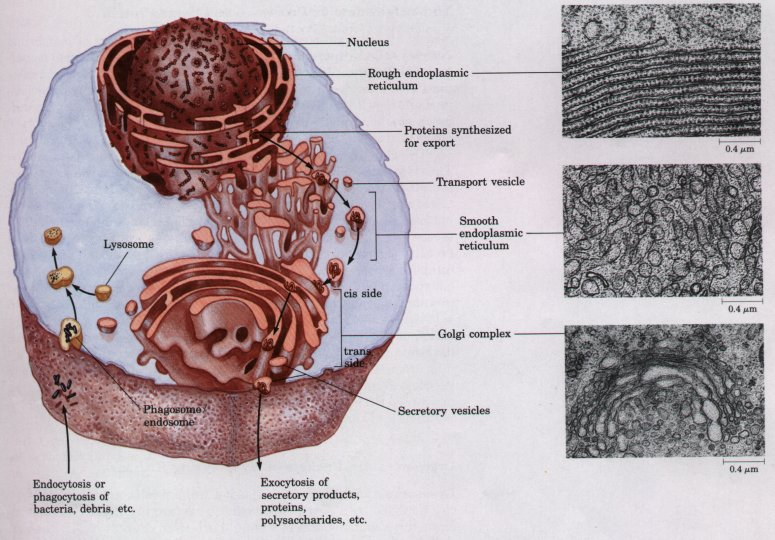
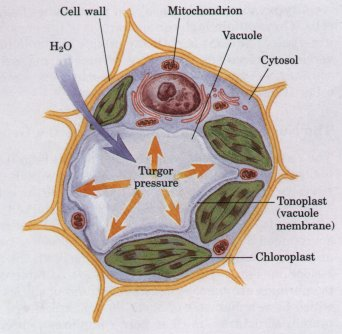
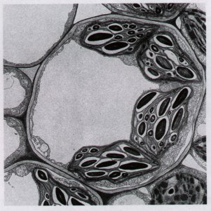
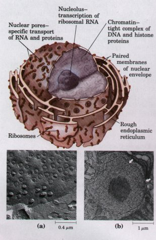
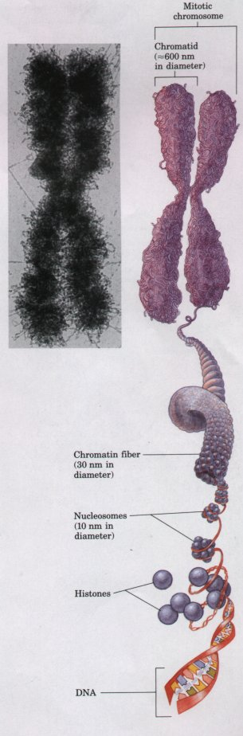
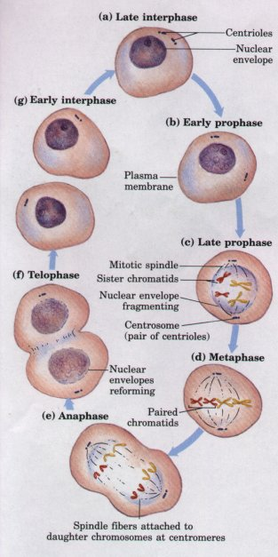
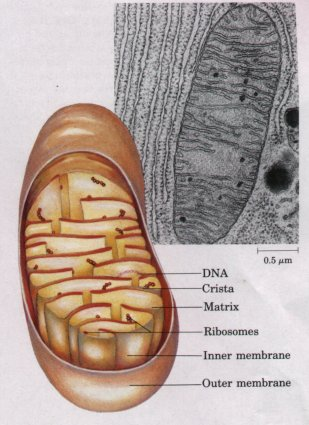
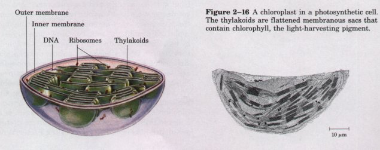

Endocytosis is a mechanism for transporting components of the surrounding medium deep into the cytoplasm. In this process (Fig. 2-10), a region of the plasma membrane invaginates, enclosing a small volume of extracellular fluid within a bud that pinches off inside the cell by membrane fission. The resulting small vesicle (endosome) can move into the interior of the cell, delivering its contents to another organelle bounded by a single membrane (a lysosome, for example; see p. 34) by fusion of the two membranes. The endosome thus serves as an intracellular extension of the plasma membrane, effectively allowing intimate contact between components of the extracellular medium and regions deep within the cytoplasm, which could not be reached by diffusion alone. Phagocytosis is a special case of endocytosis, in which the material carried into the cell (within a phagosome) is particulate, such as a cell fragment or even another, smaller cell. The inverse of endocytosis is exocytosis (Fig. 2-10), in which a vesicle in the cytoplasm moves to the inside surface of the plasma membrane and fuses with it, releasing the vesicular contents outside the membrane. Many proteins destined for secretion into the extracellular space are released by exocytosis after being packaged into secretory vesicles.
The small transport vesicles moving to and from the plasma membrane in exocytosis and endocytosis are parts of a dynamic system of intracellular membranes (Fig. 2-10), which includes the endoplasmic reticulum, the Golgi complexes, the nuclear envelope, and a variety of small vesicles such as lysosomes and peroxisomes. Although generally represented as discrete and static elements, these structures are in fact in constant flux, with membrane vesicles continually budding from one of the structures and moving to and merging with another.
The endoplasmic reticulum is a highly convoluted, three-dimensional network of membrane-enclosed spaces extending throughout the cytoplasm and enclosing a subcellular compartment (the lumen of the endoplasmic reticulum) separate from the cytoplasm. The many flattened branches (cisternae) of this compartment are continuous with each other and with the nuclear envelope. In cells specialized for the secretion of proteins into the extracellular space, such as the pancreatic cells that secrete the hormone insulin, the endoplasmic reticulum is particularly prominent. The ribosomes that synthesize proteins destined for export attach to the outer (cytoplasmic) surface of the endoplasmic reticulum, and the secretory proteins are passed through the membrane into the lumen as they are synthesized. Proteins destined for sequestration within lysosomes, or for insertion into the nuclear or plasma membranes, are also synthesized on ribosomes attached to the endoplasmic reticulum. By contrast, proteins that will remain and function within the cytosol are synthesized on cytoplasmic ribosomes unassociated with the endoplasmic reticulum.

Figure 2-10 The endomembrane system includes the nuclear envelope, endoplasmic reticulum, Golgi complex, and several types of small vesicles. This system encloses a compartment (the lumen) distinct from the cytosol. Contents of the lumen move from one region of the endomembrane system to another as small transport vesicles bud from one component and fuse with another. High-magnification electron micrographs of a sectioned cell show rough endoplasmic reticulum, studded with ribosomes, smooth endoplasmic reticulum, and the Golgi complex.
The endomembrane system is dynamic; newly synthesized proteins move into the lumen of the rough endoplasmic reticulum and thus to the smooth endoplasmic reticulum, then to the Golgi complex via transport vesicles. In the Golgi complex, molecular "addresses" are added to specific proteins to direct them to the cell surface, lysosomes, or secretory vesicles. The contents of secretory vesicles are released from the cell by exocytosis. Endocytosis and phagocytosis bring extracellular materials into the cell. Fusion of endosomes (or phagosomes) with lysosomes, which are full of digestive enzymes, results in the degradation of the extracellular materials.
The attachment of thousands of ribosomes (usually in regions of large cisternae) gives the rough endoplasmic reticulum its granular appearance (Fig. 2-10) and thus its name. In other regions of the cell, the endoplasmic reticulum is free of ribosomes. This smooth endoplasmic reticulum, which is physically continuous with the rough endoplasmic reticulum, is the site of lipid biosynthesis and of a variety of other important processes, including the metabolism of certain drugs and toxic compounds. Smooth endoplasmic reticulum is generally tubular, in contrast to the long, flattened cisternae typical of rough endoplasmic reticulum. In some tissues (skeletal muscle, for example) the endoplasmic reticulum is specialized for the storage and rapid release of calcium ions. Ca2+ release is the trigger for many cellular events, including muscle contraction.
Nearly all eukaryotic cells have characteristic clusters of membrane vesicles called dictyosomes. Several connected dictyosomes constitute a Golgi complex. A Golgi complex (also called Golgi apparatus) is most commonly seen as a stack of flattened membrane vesicles (cisternae) (Fig. 2-10). Near the ends of these cisternae are numerous, much smaller, spherical vesicles (transport vesicles) that bud off the edges of the cisternae.
The Golgi complex is asymmetric, structurally and functionally. The cis side faces the rough endoplasmic reticulum, and the trans side, the plasma membrane; between these are the medial elements. Proteins, during their synthesis on ribosomes bound to the rough endoplasmic reticulum, are inserted into the interior (lumen) of the cisternae. Small membrane vesicles containing the newly synthesized proteins bud from the endoplasmic reticulum and move to the Golgi complex, fusing with the cis side. As the proteins pass through the Golgi complex to the trans side, enzymes in the complex modify the protein molecules by adding sulfate, carbohydrate, or lipid moieties to side chains of certain amino acids. One of the functions of this modification of a newly synthesized protein is to "address" it to its proper destination as it leaves the Golgi complex in a transport vesicle budding from the trans side. Certain proteins are enclosed in secretory vesicles, eventually to be released from the cell by exocytosis. Others are targeted for intracellular organelles such as lysosomes, or for incorporation into the plasma membrane during cell growth.
Lysosomes, found in the cytoplasm of animal cells, are spherical vesicles bounded by a single membrane. They are usually about 1 *** in diameter, about the size of a small bacterium (Fig. 2-10). Lysosomes contain enzymes capable of digesting proteins, polysaccharides, nucleic acids, and lipids. They function as cellular recycling centers for complex molecules brought into the cell by endocytosis, fragments of foreign cells brought in by phagocytosis, or worn-out organelles from the cell's own cytoplasm. These materials selectively enter the lysosomes by fusion of the lysosomal membrane with endosomes, phagosomes, or defective organelles, and are then degraded to their simple components (amino acids, monosaccharides, fatty acids, etc.), which are released into the cytosol to be recycled into new cellular components or further catabolized.
The degradative enzymes within lysosomes would be harmful if not confined by the lysosomal membrane; they would be free to act on all cellular components. The lysosomal compartment is more acidic (pH <=5) than the cytoplasm (pH ≈ 7); the acidity is due to the action of an ATP-fueled proton pump in the lysosomal membrane. Lysosomal enzymes are much less active at pH 7 than at pH <=5, which provides a second line of defense against destruction of cytosolic macromolecules, should these enzymes escape into the cytosol.
Plant cells do not have organelles identical to lysosomes, but their vacuoles carry out similar degradative reactions as well as other functions not found in animal cells. Growing plant cells contain several small vacuoles, vesicles bounded by a single membrane, which fuse and become one large vacuole in the center of the mature cell (Fig. 2-11; see also Fig. 2-8b). The surrounding membrane, the tonoplast, regulates the entry into the vacuole of ions, metabolites, and cellular structures destined for degradation. In the mature cell, the vacuole may represent as much as 90% of the total cell volume, pressing the cytoplasm into a thin layer between the tonoplast and the plasma membrane. The liquid within the vacuole, the cell sap, contains digestive enzymes that degrade and recycle macromolecular components no longer useful to the cell. In some plant cells, the vacuole contains high concentrations of pigments (anthocyanins) that give the deep purple and red colors to the flowers of roses and geraniums and the fruits of grapes and plums. Like the contents of lysosomes, the cell sap is generally more acidic than the surrounding cytosol. In addition to its role in storage and degradation of cellular components, the vacuole also provides physical support to the plant cell. Water passes into the vacuole by osmosis because of the high solute concentration of the cell sap, creating outward pressure on the cytosol and the cell wall. This turgor pressure within cells stiffens the plant tissue (Fig. 2-11).


Figure 2-11 The vacuole of a plant cell contains high concentrations of a variety of stored compounds and waste products. Water enters the vacuole by osmosis and increases the vacuolar volume. The resulting turgor pressure forces the cytoplasm out against the cell wall. The rigidity of the cell wall prevents expansion and rupture of the plasma membrane.
Some of the oxidative reactions in the breakdown of amino
acids and fats produce free radicals and hydrogen peroxide
(H202), very reactive chemical species that could damage cellular
machinery. To protect the cell from these destructive byproducts,
such reactions are segregated within small membrane-bounded
vesicles called peroxisomes. The hydrogen peroxide is degraded by
catalase, an enzyme present in large quantities in peroxisomes
and glyoxysomes; it catalyzes the reaction 2H2O2  2H2O + O2.
2H2O + O2.
Glyoxysomes are specialized peroxisomes found in certain plan cells. They contain high concentrations of the enzymes of the glyogylate cycle, a metabolic pathway unique to plants that allows the con version of stored fats into carbohydrates during seed germination. L5 sosomes, peroxisomes, and glyoxysomes are sometimes referred t collectively as microbodies.
| The eukaryotic nucleus is very complex in both its structure and it biological activity, compared with the relatively simple nucleoid of prc karyotes. The nucleus contains nearly all of the cell's DNA, typicall 1,000 times more than is present in a bacterial cell; a small amount c DNA is also present in mitochondria and chloroplasts. The nucleus i surrounded by a nuclear envelope, composed of two membranes sel arated by a narrow space and continuous with the rough endoplasmi reticulum (Fig. 2-12; see also Fig. 2-10). At intervals the two nuclea membranes are pinched together around openings (nuclear pores) which have a diameter of about 90 nm. Associated with the pores ar protein structures (nuclear pore complexes), specific macromolecul transporters that allow only certain molecules to pass between th cytoplasm and the aqueous phase of the nucleus (the nucleoplasm),such as enzymes synthesized in the cytoplasm and required in th nucleoplasm for DNA replication, transcription, or repair. Messenge R,NA precursors and associated proteins also pass out of the nucleu through the nuclear pore complexes, to be translated on ribosomes in the cytoplasm; the nucleoplasm contains no ribosomes. |  Figure 2-12 The nucleus and nuclear envelope. (a) Scanning electron micrograph of the surface of the nuclear envelope, showing numerous nuclear pores. (b) Electron micrograph of the nucleus of the alga Chlamydomonas. The dark body in the center of the nucleus is the nucleolus, and the granular material that fills the rest of the nucleus is chromatin. The nuclear envelope has paired membranes with nuclear pores; two are shown by arrows. |
Inside the nucleus is the nucleolus, which appears dense in electron micrographs (Fig. 2-12b) because of its high content of RNA. The nucleolus is a specific region of the nucleus, in which the DNA contains many copies of the genes encoding ribosomal RNA. To produce the large number of ribosomes needed by the cell, these genes are continually copied into RNA (transcribed). The nucleolus is the visible evidence of the transcriptional machinery and the RNA product. Ribosomal RNA produced in the nucleolus passes into the cytoplasm through the nuclear pores. The rest of the nucleus contains chromatin, so called because early microscopists found that it stained brightly with certain dyes. Chromatin consists of DNA and proteins bound tightly to the DNA, and represents the chromosomes, which are decondensed in the interphase (nondividing) nucleus and not individually visible.
Before division of the cell (cytokinesis), nuclear division (mitosis) occurs. The chromatin condenses into discrete bodies, the chromosomes (Fig. 2-13). Cells of each species have a characteristic number of chromosomes with specific sizes and shapes. The protist Tetrahymena has 4; cabbage has 20, humans have 46, and the plant Ophioglossum, about 1,250! Usually each cell has two copies of each chromosome; such cells are called diploid. Gametes (egg and sperm, for example) produced by meiosis (Chapter 24) have only one copy of each chromosome and are called haploid. During sexual reproduction, two haploid gametes combine to regenerate a diploid cell in which each chromosome pair consists of a maternal and a paternal chromosome.
Chromosomes and chromatin are composed of DNA and a family of positively charged proteins, histones, which associate strongly with DNA by ionic interactions with its many negatively charged phosphate groups. About half of the mass of chromatin is DNA and half is histones. When DNA replicates prior to cell division, large quantities of histones are also synthesized to maintain this 1:1 ratio. The histones and DNA associate in complexes called nucleosomes, in which the DNA strand winds around a core of histone molecules (Fig. 2-13). The DNA of a single human chromosome forms about a million nucleosomes; nucleosomes associate to form very regalar and compact supramolecular complexes. The resulting chromatin fibers, about 30 nm in diameter, condense further by forming a series of looped regions, which cluster with adjacent looped regions to form the chromosomes visible during cell division. This tight packing of DNA into nucleosomes achieves a remarkable condensation of the DNA molecules. The DNA in the chromosomes of a single diploid human cell would have a combined length of about 2 m if fully stretched as a DNA double helix, but the combined length of all 46 chromosomes is only about 200 nm.
 Figure 2-13 Chromosomes are visible in the electron microscope during mitosis. Shown here is one of the 46 human chromosomes. Every chromosome is composed of two chromatids, each consisting of tightly folded chromatin fibers. Each chromatin fiber is in turn formed by the packaging of a DNA molecule wrapped about histone proteins to form a series of nucleosomes. (Adapted from Becker, W.M. & Deamer, D.W. (1991) The World of the Cell, 2nd edn, Fig. 13-20, The Benjamin/Cummings Publishing Company, Menlo Park, CA.) |
 Figure 2-14 Mitosis and cell division in animal cells. In the interphase (nondividing) nucleus (a), the chromosomes are in the form of dispersed chromatin. As mitosis begins (b), chromatin condenses into chromosomes and the mitotic spindle begins to form; centrosomes, which typically contain centriole pairs, dictate the orientation of the spindle. The nuclear envelope disintegrates and the nucleolus disappears (c), and the chromosomes align at the center of the cell (d). The chromatids of each chromosome move to opposite poles of the cell, pulled by spindle fibers attached to their centromeres (e), and a nuclear envelope forms around each new set of chromosomes (f). Finally, two daughter cells form by cell division (cytokinesis) (g). Although the same basic process occurs in all eukaryotes, there are differences in details of mitosis in plants, fungi, and protists. |
Before the beginning of mitosis, each chromosome is duplicated to form paired, identical chromatids, each of which is a double helix of DNA. During mitosis (Fig. 2-14), the two chromatids move to opposite ends (poles) of the cell, each becoming a new chromosome. Small cylindrical particles called centrioles, composed of the protein tubulin, provide the spatial organization for the migration of chromatids to opposite ends of the dividing cell. To allow the separation of chromatids, the nuclear envelope breaks down, dispersing into membrane vesicles. When the separation of the two sets of chromosomes is complete, a nuclear envelope derived from the endoplasmic reticulum re-forms around each set. Finally, the two halves of the cell are separated by cytokinesis, and each daughter cell has a complete diploid complement of chromosomes. After mitosis is complete the chromosomes decondense to form dispersed chromatin, and the nucleoli, which disappeared early in mitosis, reappear.
| Mitochondria (singular,
mitochondrion) are very conspicuous in
the cytoplasm of most eukaryotic cells (Fig. 2-15). These
membranebounded organelles vary in size, but typically
have a diameter of about 1 μm, similar to that of
bacterial cells. Mitochondria also vary widely in shape,
number, and location, depending on the cell type or
tissue function. Most plant and animal cells contain
several hundred to a thousand mitochondria. Generally,
cells in more metabolically active tissues devote a
larger proportion of their volume to mitochondria. Each mitochondrion has two membranes. The outer membrane is unwrinkled and completely surrounds the organelle. The inner membrane has infoldings called cristae, which give it a large surface area. The inner compartment of mitochondria, the matrix, is a very concentrated aqueous solution of many enzymes and chemical intermediates involved in energy-yielding metabolism. Mitochondria contain many enzymes that together catalyze the oxidation of organic nutrients by molecular oxygen (O2); some of these enzymes are in the matrix and some are embedded in the inner membrane. The chemical energy released in mitochondrial oxidations is used to generate ATP, the major energy-carrying molecule of cells. In aerobic cells, mitochondria are the principal producers of ATP, which diffuses to all parts of the cell and provides the energy for cellular work. |
 Figure 2-15 Structure of a mitochondrion. This electron micrograph of a mitochondrion shows the smooth outer membrane and the numerous infoldings of the inner membrane, called cristae. (Note the extensive rough endoplasmic reticulum surrounding the mitochondrion. ) |
Unlike other membranous structures such as lysosomes, Golgi complexes, and the nuclear envelope, mitochondria are produced only by division of previously existing mitochondria; each mitochondrion contains its own DNA, RNA, and ribosomes. Mitochondrial DNA codes for certain proteins specific to the mitochondrial inner membrane, but other mitochondrial proteins are encoded in nuclear DNA. This and other evidence supports the theory that mitochondria are the descendants of aerobic bacteria that lived symbiotically with early eukaryotic cells.
Plastids are specialized organelles in the cytoplasm of plants; they have two surrounding membranes. Most conspicuous of the plastids and characteristically present in all green plant cells and eukaryotic algae are the chloroplasts (Fig. 2-16). Like mitochondria, the chloroplasts may be considered power plants, with the important difference that chloroplasts use solar energy, whereas mitochondria use the chemical energy of oxidizable molecules. Pigment molecules in chloroplasts absorb the energy of light and use it to make ATP and, ultimately, to reduce carbon dioxide to form carbohydrates such as starch and sucrose. The photosynthetic process in eukaryotes and in cyanobacteria produces O2 as a byproduct of the light-capturing reactions. Photosynthetic plant cells contain both chloroplasts and mitochondria. Chloroplasts transduce energy only in the light, but mitochondria function independently of light, oxidizing carbohydrates generated by photosynthesis during daylight hours.
Chloroplasts are generally larger (diameter 5 μm) than mitochondria and occur in many different shapes. Because chloroplasts contain a high concentration of the pigment chlorophyll, photosynthetic cells are usually green, but their color depends on the relative amounts of other pigments present. These pigment molecules, which together can absorb light energy over much of the visible spectrum, are localized in the internal membranes of the chloroplast, which form stacks of closed cisternae known as thylakoids (Fig. 2-16). Like mitochondria, chloroplasts contain DNA, RNA, and ribosomes. Chloroplasts appear to have had their evolutionary origin in symbiotic ancestors of the cyanobacteria.
